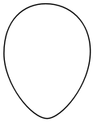
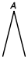
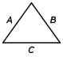
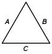

Беседа 2934 от 3877 · Беинса Дуно
Спокойно сърдце
Сряда, 5 часа сутринта
Добрата молитва
(Чете се свободната тема: „Кое най-много обичам.“)
Въпросът е там, да знае човек да дава. Да даваш и да вземаш, това е пак цяла наука. Някой път човек не знае как да дава и да взема. При Словото Божие не се взема, защото не е нещо материално. Говори се: „Вземам пример от него.“ Нито вземаш, нито даваш. Ти не може да вземаш, нито може да даваш. Ти не може да вземеш. Ти не може да вземеш крака си, нито да дадеш крака си. Не може да вземеш очите си, нито да дадеш очите си. От себе си какво може да даваш? Казвате: „Аз давам нещо от себе си.“ Да оставим, това е едно противоречие, което не може да се обясни [в] света.

(Учителят има на масата една хубава ябълка, една хубава круша. Той при идването ги донесе и ги остави на масата. Всички ги гледаха с хубава усмивка.) Вие разглеждате, дядо ти писал книга. Възхищавате се, но това не сте вие, то е дядо ви. Казвате: „Трезва мисъл.“ В какво седи трезвата мисъл?
Та ние едва сега живеем онова, което Бог е създал, и опитваме Божиите работи. Не сме ги опитали още. Много малко сме ги опитали. Някой път виждаме някои работи. Някой чел Божиите работи, пък направил свои бележки. Друг дошъл и той чел, и той турил своите бележки. Ти като дойдеш, четеш и всеки, който направил забележките на Божието Слово, Божието Слово ли е? Ти се намериш в едно противоречие. Ти намериш не самата истина. Самата истина е туй, което е оригинално, което Бог направил. Какви коментарии са турили другите същества, които са дошли отпосле, може да се изучават. Казваш: „Аз зная какво нещо е Словото Божие. Така е казал Господ.“ Но това е твое разбиране. Казваш: „Аз чух Господа.“ Как чувате Господа? Как ще ми обясните, ако ви попитам, как чухте Господа? Как, отвън ли ви говори Господ? Ако Господ отвън ти е проговорил, то е едно заблуждение, защото отвън Господ не говори. Ако отвътре ти е проговорил, то е друго заблуждение. Ами че от вътрешните заблуждения не е ли? Имаме заблуждението, че искаме да ядем. Яденето не е ли заблуждение. Отвътре усещаш, че си се наситил вече, не ти трябва да ядеш. Туй, което усещаш отвътре, мислиш, че което усещаш, е право. Но относително право, в дадения случай, в един момент е право, а не за през цялото време.

Та казвам: В сегашния живот трябва да направим един избор от нашите мисли и чувствувания, които не са наши. Има много неща, които минават през ума ти, трябва да ги сортираме, трябва да сортираме мислите си. Не всичките мисли са еднакво ценни. За пример каква е разликата, какво ще изберете от двете за ядене? (Учителят посочва крушата и ябълката.) Крушата при какви съображения вие ще изберете? То са вътрешни субективни неща. Мислите, че в единия плод имате повече съдържание. Някой път мислите, че в другия плод. Зависи от вкуса. [И] цветът привлича. Когато има жълт цвят за някой човек, казваме, че е болнав. Но жълтият цвят в крушата го намираме за много здрав. Откъде произтича туй противоречие, че за човека жълтият цвят е болнав, а в крушата е здрав?
Божията Мисъл, преди да я чуем, тя пред себе си носи светлина. След като дойде в тебе, има един усет, че идва светлина в тебе. Тогава ти ще чуеш и Божия Глас. Ако не дойде светлината, пък чуеш гласа на Бога, ако няма в тебе светлина, твоето състояние ще бъде друго. Ако чуеш гласа на Бога в тъмнината, в тебе ще се яви страх. Значи, когато Бог ти проговори в тъмнината, условията са изменени, не са вече така благоприятни. Когато Бог ти говори в светлина, условията са благоприятни. Значи, когато ти говори в тъмнина, само вътрешни условия има. Имаш възможност. Когато ти говори отвън, в тъмнина, че не Го виждаш, тогава условията са лоши. Казвам, често вие се усещате неразположени духом. Търсите причината. Неразположени сте някой път, вие тръгнете и си пуснете пояса да се влече, гледате само кой ще го настъпи, само кой ще го докосне, току изведнъж. То е фигура на речта. Ти очакваш само някой да ти каже една дума, само да те обиди и изведнъж започваш да му говориш тъй както не трябва. То е едно подпушено състояние. Когато човек духовно е подпушен, той е възбуден. Когато физически е подпушен, ограничен, веднага се ражда едно възмущение, иска да се освободи, пък не знае как да се освободи. Представете си, че сте вързан с едно въже, искате да се освободите, мислите да скъсате въжето, правите опит, но въжето е по-силно от вас, започва да ви боли ръката. Ако ви попитат: „Откъде дойдоха вашите страдания?“ Най-първо вие сте спали, вашето съзнание не е било будно. Дошъл някой, че ви вързал, вие не сте усетили. Като ставате, усещате ръцете ви са ограничени. Искате сега да се освободите. Правите едно усилие. Туй въже е толкоз дебело, не може да се скъса. Усещате, че ви боли кракът. Казвате: „Болят ме ръцете.“ Защо? Защото сте правили усилия да се освободите от въжето. Онзи, който ви вързал вас, ви е направил голяма погрешка. Как тъй да ви върже без ваше позволение. Питам: Как тъй без позволение заспахте? Кого питахте, че заспахте? Имате ли право да спите? Нямате право да спите, с позволение става. Нямате право да се пробуждате, с позволение става пробуждането. Нямате право да мислите без позволение. Каквото и да е, нямате право. Нямате право да спрете мисълта си. Сега вие само предполагате туй което не е, и вследствие на туй което не е, се създават всичките противоречия. Казвате: „Аз съм свободен.“ Какво разбирате под „свобода“? „Свобода“ подразбира, че ти си в един свят на истината, дето всичките хора са разумни. Следователно, щом постъпиш според правилата на тия, разумните хора, както те живеят, ти между тях си свободен, и всички имат твоето добро разположение, дето и да са. Всички ти помагат, но ако в този свят ти измениш, не постъпваш както те постъпват, веднага ще се ограничиш, ще изгубиш своята свобода. Сега вие нямате туй разбиране. Казвате: „Не съм ли аз свободен.“ Че ти не може да бъдеш свободен, ако не живееш между свободни хора. Ти не може да бъдеш силен човек, ако не живееш между силните хора. Не може да бъдеш умен човек, ако не живееш между умните хора. Не може да бъдеш и добър човек, ако не живееш между добрите хора. Туй са изводи сега. Тъй аз разбирам, в проявление. Аз считам добро какво? Имате една кибритена клечка в даден случай, тя е нито лоша, нито добра. Но щом запаля тази кибритена клечка, тя може да бъде или добра или лоша. Да обясня сега. Ако аз запаля огъня на огнището, за тия хора, които са със студени ръце, да се стоплят, да направят хляб, да опекат хляба, тази клечка е добра. Но ако запаля дрехата на някой, този се изгори, онзи се изгори, тази клечка е лоша. Следователно, когато нашата мисъл произвежда доброто в нас самите, ние казваме: „Тази мисъл е добра.“ Когато тази мисъл не е турена на място, произвежда неща, които нас не ни са потребни, произвежда страдание. Тази мисъл не е добра. Казвам, сега от вас зависи, от тази клечка, която държите, от вас зависи тази клечка да бъде или добра или лоша. Когато клечката става добра, вие ставате добри. Когато клечката става лоша, вие ставате лоши. Когато запалите огъня, всичките тия ваши ближни си услужват. Казват: „Много ти благодарим за услугата, която направи.“ Щом изгорите този, щом изгорите онзи, казват: „Много зле направихте. Тази пакост направихте, онази пакост направихте.“ Значи, в дадения случай, ние ще бъдем лоши. Сега туй е новата мисъл, тя е потребна, понеже тия тела, които сега ги имаме, много работи вече не можем да свършим. С тия тела, както сега са направени, много работи не можем да свършим. Какво ще направи един стар дядо на 120 години? Какво ще направи, кажете ми? На 120 години той ще иде да работи. Казва: „Нека стана възрастен, стар човек.“ Във философско отношение този дядо нищо няма да направи. Следователно, задачата на старите хора е те да свършат. Старите хора са вече свързани. Те остаряха по единствената причина, че тяхното съзнание е изгубено. Този дядо как е остарял? Той най-първо мисли да стане възрастен и стане възрастен. Мисли да стане силен и не става силен. Казва сега дядото: „Мене ми трябва една нива да я обработвам.“ Дядото казва: „Мене ми трябва един кон.“ После казва: „Трябва ми юлар, седло, юзда ми трябва.“ После казва: „Сам човек не може да живее, чакай да намеря още един като мене.“ Намери си другарка, след това се народят деца. И всичките тия хора се съберат. Конят ще го [върже], другарката ще го върже, децата ще го вържат и той ще заспи. И той един ден ще усети, че е вързан. Народят се 4–5 деца. В съвременния живот те ще искат висше образование. Ако имате двама синове и две дъщери, постъпили са в университета, искат да следват в странство. Всичките казват: „Еднакво право имаме, ти си ни баща.“ – „Баща ви съм.“ – „Ще ни пратиш да живеем във Франция.“ – „Колко струва?“ – „Четиридесет–петдесет хиляди лева.“ Четиримата по 50 хиляди, 200 хиляди лева. Чиновник си, може да вземеш 10 хиляди лева. Имаш само 10 хиляди на месец, а 100 ти трябват, откъде ще ги вземеш? Ние разсъждаваме сега. Не че са сериозни работи. Те са ред разсъждения. Сега ме занимава един въпрос, виждам, изучавам един въпрос, вътрешен. Кои са ония причини, които спъват хората, да възприемат новото, Божието, и защо не го прилагат? Кои са причините вътре и какъв е поводът? Казват, защо се заблуждаваш? Не е жената причината. Тя е само повод. И мъжът не е причината и децата не са. То са поводи само. Къде е причината? Дяволът и той не е причината. И дяволът няма да застави тия хора. Който не разбира, има дявол. За който не разбира, има жени. За който не разбира, има мъже и деца. Те са препяствия за мене. Тия работи не са спънки. Не е там причината. Когато ви казвам психологически, кое разбирам под думата „истина“? Тъй е, но имаш чувство, че нещо съществува. Ти не го знаеш, чувствуваш само, имаш съприкосновение към едно тяло, не го знаеш какво е и по пръстите ще познаеш дали е грубо или гладко, дали е топло или студено, дали е жидко или твърдо. Тия впечатления не носиш, но туй е, което може да разбираш. Те са външни впечатления. Второ: ти искаш да знаеш, туй, което ти си хванал. (Учителят държи крушата.) Представете си, че туй същество си пипал, не знаеш качествата, какво съдържа в себе си. Туй е външната форма. Второто чувство, казваме: „Учителю, благ.“ Благостта произтича от устата. Благо е туй, което ние вкусваме. Казваме: „Бог е благ.“ Благ е Бог, понеже вкусваме Бога. Значи туй, което ние ядем, то е Бог вътре в нас. И от туй, което възприемаме в яденето, оттам идва животът. Казваме: „Къде е Господ?“ Господ е скрит. Като Го ядем, оживяваме. Като влезе вътре в мене, Той започва да ми говори. Говори ми, че е сладък, че е благ. Аз казвам: „Сладките круши, сладките круши, които аз съм направил.“ Сладкото е хубаво. Ти искаш да видиш Господ какъв е. Ето, отвън е това. (Учителят показва крушата.) То е само формата на проявлението. Туй не е реалност. То е сянка на нещата. Аз не считам сенките на нещата за илюзия. Във философията казват: „има илюзии“. За мене илюзии не съществуват. Съществуват илюзии, но в този смисъл: както философите мислят, че някои неща са реални, някои не са реални. Всичко е относително реално. Под думата „абсолютно реално“ разбираме туй, което не се изменя. „Относително“ разбираме реалността, която се проявява и се изменя. Но изменението на едно нещо ни най-малко не показва, че туй нещо не е реално.
Да кажем, че имате точката B. Тази точка, за да се прояви, тя има някакво движение. Може да се движи около себе си. Но трябва да имате очи да я видите. Но тази точка, за да се прояви, в какво седи нейното проявление? Този път е проявление на точката. Следователно е сянка. Тя, като мине, ще остави един път. Туй показва, че точката се е проявила в този път. То е цяла реалност. Но точката, тя била във всичките тия положения. Този път реален ли е? Реален е. То е точката, която е била. В правата линия са възможностите на точката да се прояви. Тогава правата линия става реалност на точката. Тя иска да се прояви. Тогава имаме плоскостта. Що е плоскостта? Плоскостта е възможност да се прояви правата линия. Така ние разсъждаваме. Когато плоскостта стане реалност, за да се прояви. Тялото е възможност да се прояви една плоскост. Казвам, туй, в което вие се проявявате, то е възможност. Вие сте една реалност, една точка. Най-първо ви трябва една права линия, в която вие да се проявите. Значи ще вървите. В туй животът ви ще се разшири. Но тогава вече линията става реална. Тази линия, тя трябва да се прояви, тя е в движение. Плоскостта, като се прояви, ще има едно тяло, в което тази плоскост става реална.
Казвам сега, психологически заблужденията произтичат от това, че човек не може да има ясна представа за онова, което Бог е създал, ако неговото сърдце не образува една гладка плоскост, в която нещата да се отразяват, [в] огледало да ги вижда. Ти да ги чувствуваш. Какво значи чувствувание? Ти трябва да чувствуваш нещата, а чувствуванието произтича от [страданието]. Ти трябва да чувствуваш нещата, след туй да ги възприемаш, да ги опиташ по един вътрешен начин. Да намериш, че тия неща са реални. Ще намериш откъде станало отражението.
Та казвам сега, твоето сърце не е свободно, спокойно, [щом] твоята мисъл, твоят ум няма да имат ясна представа за онова, което Бог е създал. Щом нямаш ясна представа, ти ще се намериш в заблуждение. Ако е размътено сърцето ти, няма да виждаш хората красиви. Ще ги виждаш погрознели, ще ги виждаш грозни, начумерени, гласовете им няма да чуваш както трябва. Лицето им, очите им, по всичко ще се показва грозота, ще се създаде една грозна мисъл. Причината не са хората. Не са те лоши, но твоето сърце не е спокойно, повърхността не е гладка. И тогава, за да се оправиш, трябва да успокоиш сърцето, за да имаш истинско отражение на Божествения свят. Ева, като отиде при дървото, oтде произлезе грехът? – Нейното сърце се размъти. И тя помисли, че като изяде този плод, ще стане нещо. Какво ще стане? Всичкото прегрешение седеше в това, че тя не попита Господа, тя не покани Господа. И трябваше отвън да я убедят физически, понеже ядеше този плод. Други я убеждават. Друго едно съзнание. Тя не го направи от своя ум. Но друго съзнание ѝ казва: „Ако ядеш от този плод, ще станеш като Бога.“ Че най-първо [Той] я направи, какво ще става като Бога. Тя е родена от Бога, тя не съзнава, че е направена от Бога. Тя мисли, като яде от плода на туй дърво, тогава ще стане като Бога. Ето заблужденията. Тя влиза в противоречие със себе си. Тогава се образува първата лъжа. Твърденията не бяха верни. Господ казва: „Кой ви казва, че Аз не съм ви създал?“ На Ева казва: „Кой те излъга, че мислиш, че не съм те създал?“ Хвана Адама и казва: „Как ти досега да не знаеш, че аз те създадох?“ Казва: „Онази жена.“ Не, не хвърляй погрешка дето няма. Сърцето, умът, не беше право. Казвам: Сега правите същата погрешка. Всичките погрешки произтичат, че сърцето е размътено и там е причината. Сърцето ви ще утихне, да мълчи земята, да утихне сърцето, да се отрази създаденият Божи свят и да се яви Божествената светлина. И нашият ум да възприеме света тъй както е. Ще гледате отражението, огледалото, както един астроном. Един астроном, който разглежда небето, той има телескоп и той така е направен, че ще гледаш често чрез отражението. Господ направил така, че нашите телескопи са отражения. Сърцето е огледало. Умът е тръбата, в която Божественият свят иде, отразява се върху огледалото. Ние хората наблюдаваме тръбата и огледалото, и ние, които наблюдаваме, виждаме Божествената реалност. Този астроном трябва да схване вярно небесните тела. Да определи пътищата, по които те се движат, вътрешните съотношения, както са. Казвам: Ако вашето огледало не дава тия ясните образи на нещата, вие тогава няма да имате една наука, няма да знаете как да постъпите. Първото нещо, вас ви трябва спокойствие. Вие сте хора много неспокойни. Седите тук, постоянно се движите. Да седнеш тъй, пет минути като статуя, без да се движиш. Отвън ще бъдеш спокоен. Вие седнете и наблюдавате някой кого гледал. Турците казват […] (липсва текст в оригинала) Те са заблуждения, религиозни заблуждения на хората. Казвате: „Той гледа чуждите жени.“ Те са ваши жени. Гледаш Божиите жени. Чуждите жени са ваши жени. Тези хора, които Бог направи, тях гледай. Които хората са направили, не ги гледай. Щом една жена те изкушава, тя не е от Бога. Не ходи да я гледаш. Защо ще ходиш да гледаш чуждите жени? Гледай сестрите: една, втора, трета, четвърта. Божественото никога не прави пакост никому. Казва То: „Може да бъдеш човек.“ Ти като хванеш сестра си, никакво изкушение няма да дойде. Сестра ти вече ще се разтопи, ще стане вода. Сестра ти в тебе ще влезе като светлина, сестра ти ще влезе в тебе като един хубав тон в твоето ухо. Сестра ти ще влезе като едно ухание на едно цвете в носа. Сестра ти ще влезе като хубава хапка в устата ти. Сестра ти ще дойде като нещо гладко, хубаво, приятно у тебе. Ти не може да хванеш сестра си и да кажеш: „Хванах я.“ Ти само ще пипаш сестра си и тя се движи толкоз бързо, че нищо не е в състояние да я ограничи. Тя даже една милионна част от секундата не може да стои при тебе. Тогава как ще я хванеш? Знаеш какво е една милионна от секундата. Тя не може да седи при тебе. То е като мигновение. То е миг, но е доста дълго време.
Та сега всички вие казвате: „Съгрешихме.“ В какво седи съгрешението? Грехът е едно заблуждение, че нас Бог не ни е създал добре и сега ние искаме да станем добри. Не. За мене правата мисъл, казвам тъй: Сърцето ми трябва да бъде спокойно, тихо, че да се отрази Божественият свят, да имам ясна представа. Щом се отрази Божественият свят, всяко нещо, което се отразява правилно, то започва да ми говори за Бога. Тъй както един музикант, като гледа тоновете, или на органа, или на пианото, хубаво нагласено, но той като гледа и като свири тия тонове, ти ще чуеш най-хубавите тонове. Ще видиш какво нещо е музика, ще имаш ясна представа.
Казвам, на всинца ви трябва едно спокойно сърце. Как? – Туй, спокойното сърдце, трябва най-първо да се обнадежди. На туй, спокойното сърце трябва да му се покаже един път, по който можеш да постигнеш своите желания. В този път, постижението, това е Божествената Любов. Като изям този плод, то е Любов. Бог е влязъл в мене. Тази круша като изям, веднъж тази круша с мене върви, и веднъж като ям, достатъчно е. В годината един обед като взема, достатъчен е. И тогава един път като ядете, цяла година няма да имате кухня, няма да правите огън. Този кадеж няма да има, боравене с вашите лъжици няма да има, че маслото прегоряло, че не е пречистено, всичкото е една круша да изядете. Вие ще кажете сега: „Реално ли е това?“ Туй за което аз ви говоря, е реално. Но понеже вие сега не сте в един реален свят, има едно състояние в човека, когато човек заспива. Мислиш, че си някъде и като се събудиш, не знаеш къде си бил. Като се събудиш, помниш, но няма връзка с действителния живот. Разправяше ми един приятел и казва: „Веднъж имах едно чуване. Того, японски адмирал, има две жени. Откъде накъде Того дошъл в моя ум, че имал две жени. Че едната обичал, другата не обичал.“ Не спи, но тъй се събужда с тази мисъл. „Казвам, не съм мислил за Того никога, откъде накъде този Того дойде. Какво ме интересува че имал две жени, че едната обичал, че другата не обичал, какво отношение има с моя живот? Чудя се.“ По обед, един гадател, един от съвремените гадатели: „Иде една жена при мене, започва да ми се оплаква, че мъжът ѝ тръгнал по чуждите жени, че имал една жена по-хубава от нея.“ Та сега Того е един мъж, значи му казват: „Сега ще дойде една жена, на която сърцето е размътено.“ Какво нещо е Любовта? Казва, че нейният мъж имал една жена, която обичал. „Да знаеш, този Того е една неразбрана работа.“ Значи, дават му от невидимия свят едно тълкувание, че имал две жени, че едната обичал повече. Какво лошо има да обичаш една жена повече от друга? Аз разсъждавам за себе си, философията на Того не ме интересува. Вземам букваря, вземам и Библията. Коя книга ще ме интересува? – Букваря или Библията. Разбира се, Библията. Тук има опитности, ще ме интересуват. Ако чета пророците или после чета Христа, кое ще ме интересува повече? Думите на Христа или думите на пророците. Думите Христови ще ме интересуват повече, понеже в Неговите думи има повече яснота или по-голямо разбиране; туй, което пророците не разбираха, Христос го разбираше. Те предсказаха за едно бъдеще, ще се появи един човек. Той сам иде да реализира този Божествен план. Той не казва „Ще дойде някой“, а казва „Аз ида. Аз съм изпратен.“ Казва Писанието: „Бог толкоз възлюби света, че даде своя Син Единороден, за да не пострада всеки, който вярва в Него.“
Та на вас какво ви трябва? Вие се плашите, че ако вие обичате някого, разбирайте ме, трябва да напуснете тази обикновената любов, трябва да я оставите настрана. Любов, която произвежда безпокойство, това е една просена каша, от просо каша. Няма нищо реално вътре. Какво има в любовта? Ако ти в даден случай, Бог, Който е Любов, ти опиташ от този човек, като един плод. Какво лошо има, ако опиташ Божието присъствие в него? Но най-първо ти ще се допиташ до пръстите. После ще помиришеш крушата. После ще близнеш, после ще я туриш на ушите си, ще чуеш и най-после ще погледнеш с очите си. Ако твоята ръка, ако твоят усет, ако твоят нос, ако твоите очи казват, че тази круша е хубава, вземи я. Трябва свидетел, известни души, които да свидетелствуват, че тук е Бог. Ти, като изядеш тази круша, тогава ще почувствуваш, че Бог е благ. Тогава Господ отвътре ще ти проговори. Той ще проговори, от тази круша като излезе, ще ти проговори. Как ще ти проговори? Ако ти дотогава си бил болен и хилав, веднага здрав ще станеш. Ако ти дотогава не знаеш как да разсъждаваш, преди да си ял тази круша, щом ядеш, веднага ще имаш светла мисъл. Преди да си ял тази круша, не може да мислиш. Не обичаш хората, щом я изядеш, обичаш всичките хора. Знаеш как да направиш доброто, знаеш всичко да направиш на място. Господ е влязъл в тебе и Той ти казва: „Ела с Мене. Аз ще ти покажа как трябва да слугуваш на всичко онова, което съм създал. Ще ти кажа качествата на твоите братя, на твоите сестри, ще ти покажа как трябва да постъпваш. И на тях ще кажа, те как трябва да постъпват.“ С такъв дух ти ще се върнеш радостен и весел. Пък ако изядеш крушата, хванеш тази круша без да сондираш пръстите, усета, ушите, носа, очите, като влезе тази круша в тебе, ще те пита Господ: „Kой ти позволи да я ядеш?“ Без любов не се позволява на човека да яде. Всяко ядене без любов е престъпление. Всяко пиене вода без любов е престъпление. Всяка мисъл без любов е престъпление. Всяко чувство без любов е престъпление. Всичко, което човек прави без любов, е престъпление в света. Ако отвориш очите си без любов, пак е престъпление. Ако искаш да служиш без любов, престъпление е. Всичко, каквото вършиш без любов, е престъпление. С любов ти ще видиш Бога. Без любов ти ще видиш дявола. Вие държите вашата философия на вашите деди. Нямам нищо против.
Това е философията на вашите деди. Казвам това не за критика. Аз разсъждавам. Аз се уча да търпя хората. Иде някой, разправя ми. Знаеш колко е отегчително да слушаш еднообразие. Дойде един, разправя ми как го боли коремът. Друг, как го боли ръката. Иска да ме убеди, че била много голяма болка.
Не може да я носи, че ми разправя, разправя. Слушам го. Той ми разправя, казва: „Как дойде тази болест, не зная?“ Аз зная. Значи че сърцето му е било размътено. Тази болест дошла, понеже впечатленията не са верни. Всичките неща, които има в ума, са фалшиви. Като погледнете, това е карикатура. Децата – карикатура, жената – карикатура, приятелят – карикатура, къщата – карикатура, конят, автомобилът, всичко – карикатура. Като погледна, ако не зная закона… Седя и той започва да ме убеждава. Понякой път съм правил психологически изводи. Казвам, тук има един болен. Най-новото в науката тук е скрито. Една есенция има вътре. Ще ти просветне в ума. Ревматизмът ще изчезне. Силата Божия е туй. Той гледа, но мери мен. Гледа ми главата, гледа ми краката. Учен човек е. Дали аз разсъждавам право? Аз му казвам: „Разсъждавам по-добре от тебе. Моето сърце е тихо и спокойно. Разликата между тебе и мене е, че твоето сърце е размътено. И в тебе отраженията не стават правилно. В мене стават правилно. Аз слушам Божественият свят.“
Слушам какво ми говорят. В тебе говедата викат, прасетата викат, кокошките крякат, не знаеш кое е човешко, кое е Божествено. В мене моите говеда в гората съм ги пратил и свинете съм ги изпратил, никакво крякане няма. Слушам гласа, слушам онова Божественото. Моите прасета, като се затъжат, аз отивам, те никак не идват при мене. Аз отивам да ги посещавам. Не те да идат при мене. В туй отношение моите прасета са аристократи, аз съм демократ. Отивам при тях и казвам: „Какво правите?“ Казват: „Орем, работим. Малко е твърда почвата, дъжд няма.“ Казвам: „Ще дойде дъжд.“ Отивам, намирам воловете. Питам ги какво правят? Казват: „Косим тревата.“ Малко тази трева не е за косене още. В преносен смисъл говоря. Ние ядем и не сме доволни. Вземеш една хапка, да почувствуваш Божието присъствие. Като погледнеш света, да знаеш, че Бог говори. Седи като предметно учение за тебе да се учиш. Всичките живи хора, с които се срещаш, са предметно учение. И добрите и лошите хора са предметно учение. Ти си мислиш, че са лоши, всъщност те не са такива ти както мислиш. Че има известна лошевина, но тази лошевина произтича, че тези хора не знаят кибритената клечка къде да я турят. Ако аз приближа една силна светлина до очите ви, веднага вие ще си затворите очите. Ако вие сте от умните, отдалече ще стоите, че светлината да бъде приятна. Ако е силна, блесне ви в очите и вие ще си ги затворите.
Казвам: Когато възприемаме Божията светлина, трябва да я възприемем от някъде. Ти трябва да се поставиш точно на място. Туй, точното място, три точки има. Аз го наричам триъгълник.

Та казвам сега: При сегашните условия щом се спреш, ти трябва да се спреш на точката на Любовта, тогава ще намериш другите две точки – вярата и надеждата – вярата и надеждата, които излизат от Любовта. Двама хора, които се впрягат в живота, да работят: единият е вярата, другият е надеждата. Този център, от който произтича, то е Любовта, то е душата, която обновява. Следователно, вие искате двама по двама да работите. Единият ще носи силата на вярата, а другият – силата на надеждата. Тогава ще имате ясна представа за света. А пък любовта ще бъде третата точка, чрез която Божественият Дух ще се прояви. Писанието казва: „Духът ще ни научи.“ Но ние не можем да бъдем научени от Духа, ако нямаме любов. Ако стъпим на тази точка на любовта, любовта като се прояви, тогава Духът ще се прояви. Когато стъпим на точката на ума или на вярата, тогава умът ще се прояви. Когато стъпим на точката на надеждата, тогава сърцето ще се прояви. Сега това са моите занимания, новото, което изучавам. Как се проявява надеждата? Надеждата ще се прояви в една точка, дето сърцето ни може да се очисти. Бог в сърцето може да се прояви чрез надеждата. Бог в моя ум ще се прояви чрез вярата, ще възприеме ония мисли. За мене любовта е една точка, в която Божият Дух ще се прояви. Казвам сега: Ако вие не сте намерили точката на надеждата, ако вие не сте намерили точката на вярата, ако вие не сте намерили точката на Любовта, как ще се прояви Бог във вас? Най-първо ще намерите точката на Любовта, да се спрете върху нещо, което не се мени. След туй ще турите точката на Любовта и да започнат тия точки да се движат.

Сега както ви разправя[м] тази сутрин, ако така гледахте на нещата, знаете [ли] каква мощна сила представяте вие! Ще запалим света от единия край до другия. Казва Христос: „Аз дойдох да туря огън.“ И две хиляди години се раздухва огънят. Сега този огън нищо вече не може да го изгаси. Светът гори. Искам и вие да горите. Да изгорите без да се стопите, да се пречистите. Тогава да излязат от вас новите хора, Синове Божи, дъщери Божи, които ходят по закона на надеждата, които ходят по закона на вярата и които ходят по закона на Любовта, които ходят ръководени от Благия Божи Дух, от светлия Дух.
Отче наш.
Сега какво да правим? (Учителят гледа ябълката и крушата.) Те бяха свидетели. Какво да ги правим? Ще ги оставим. Да видим. Ще може ли днес да ги държите. Ако някому каже Господ да ги изяде, да ги изяде. А ако не му е казал Господ, да не ги яде. Като ги изядем, ще извадим семената на тази круша, ще извадим семената на тази ябълка, а тях ще ги нарежа на дребни парченца, та всичките да вкусят.
С надежда, с вяра, с любов, с Божия Дух – туй е Новото учение.
10 Лекция от Учителя,
държана на 7 декември, 1938 година
София, Изгрев